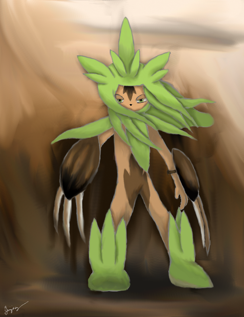
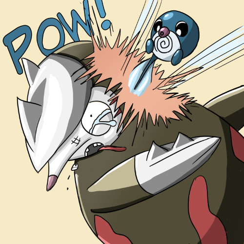
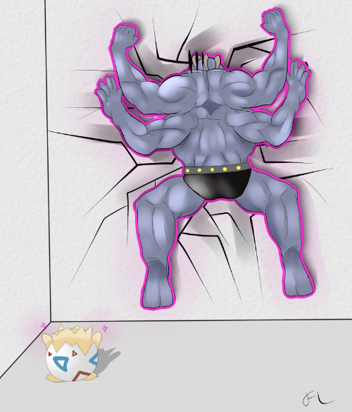
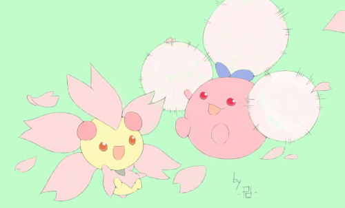

CometTheMicroraptor's piece is great in both its concept and execution. The redesign of Delphox works in that it doesn't completely overhaul the original but rather brings out elements that the actual design lacked—the witch hat and wand, for example, help convey the "magic" theme much better than the original. Technically, the piece is very pleasing to the eye, with smooth lines and striking yet harmonious colors. Delphox is drawn wonderfully, and there's little error in the way of proportions. The background does well to convey the sense of witchcraft, although I do think it's overdone; the artist could have simplified it to really highlight the main focus of the piece, the redesign itself.
CometTheMicroraptor landed first place in this MAC with an eye-catching redesign of Delphox. The "hat" and wand in hand bring to mind traditional witches, which is a nice touch. A strikingly warm colour palette with prominent oranges and yellows sealed the deal for voters and matches the subject's Fire typing. However, I personally feel that the image would've been even more interesting had the artist worked in cooler, complimentary colours to balance the overwhelming warmth; furthermore, the obvious painting strokes in areas such as the cloak and tail are somewhat distracting. Even so, this is an effective and nicely drawn entry.
2nd Place - Prankster
Well, we've got a Chespin-meets-ninja redesign of Chesnaught going on here—this is what would happen if Greninja and Chesnaught had babies. Except they might be blue. That would be the recessive gene. I like the idea, as Chesnaught is rather bulky and many people balked at his design at first, and a sexier, sleeker design would surely appeal more to the masses (i.e. Greninja). The wind blowing through new-Chesnaught's grassy mane adds dynamic interest to an otherwise static pose. In fact, the whole work seems rather dreamlike, from the shadowy background to Chesnaught's soft shading and hooded eyes. Props to Prankster for securing second place with this entry; hopefully we'll see more from him in the future.
Prankster won second place by default, but that doesn't mean his piece is bad. This Chesnaught reimagined as a ninja with claws is a far cry from the bowling ball of a Pokémon that really exists, but it is believable; the chestnut claws, the leafy ninja clothes and hair, and more, all come together to make a Pokémon that could just as easily be called "Chesnaught" just as easily as the real one. However, while the design is great, the technical aspects of the piece are lacking; the rough lines contribute to the gritty look of the design, but they lack confidence and are colored a strange grayish hue, which doesn't fit the rest of the piece. The colors as a whole lack contrast so Chesnaught fades into the background, even though it should be at the forefront. Still, with such a great design, Prankster earned the silver medal despite the lack of competition this round.
MAC #28 - PokéDavid and Goliath
Tie - Blue Frog
This looks much like a panel from a comic book page, with Poliwag as the underdog protagonist, and that isn't a bad thing at all. Dr. Excadrill, the dastardly villain, wears a hilarious expression after Poliwag, the boy wonder, nails him in the face with what we can presume to be Aqua Tail. Blue Frog escapes from the scene with solid, effective line work and bold shading, while the "POW!" in comic book font makes it even better. Alas, a closer look reveals that the illustration is slightly unpolished, as the colour runs between the lines in a few places. However, this is hardly noticeable, and it didn't prevent Blue Frog from acing the polls.
Wham bam thank you ma'am, classic comic book shenanigans meets saucy digital Poké-art. Excadrill's tear-filled eye clenches this one for me: an exquisite conception of expression. If there were one thing to change in this campy slapstick portrayal, it would be to give Poliwag an expression as equally vivid as Excadrill's.
Tie - freezenlight
freezenlight's piece embodies the theme for this month with an absolutely hilarious concept—Togepi is the last Pokémon you'd expect to take down Machamp. The piece is technically sound, with smooth lines and attractive colors. The most impressive detail is the muscle definition on Machamp, which definitely brings out the Pokémon as he gets his face smashed into the wall. Unfortunately, when compared with Machamp, the rest of the piece seems lacking. Togepi—the other half of the concept—doesn't stand out nearly as much as it should, and the background seems feels like it was added as an afterthought; the colors are dull and the lines of the room, slanted ever so slightly, make the whole image seem tilted unnaturally. Still, the concept is wonderful, and freezenlight definitely deserved the win this month.
In this comical entry by freezenlight, Togepi uses Psychic against Machamp to smash the Fighting-type into a wall, which perfectly fits this MAC's theme of Little Cup battlers trumping fully evolved opponents. Artistically, the colouring is smooth and pleasing, and the musculature on Machamp works. The magenta outline around Machamp looks rather awkward and makes you wonder where it's coming from, until you realize that this is the visual glow from Psychic, though it would be more obvious if the glow were softer instead. In addition, it's a pity that neither of the competitors' faces are visible. Regardless, this is a strong piece that's deserving of its win.
MAC #29 - Springtime for Pokémon
1st Place - MewSkitty
Very thin line art and muted pastel colors give this art a beautiful air that is actually quite hard to replicate. You have to be steady with the sword (er, pen) to get nice clean, thin lines like this. Or be handy with an eraser. Either way, MewSkitty succeeds in pulling off a simplistic, joyful drawing that is pleasing to the eye and the brain (er, heart—which one is the one that you get "feels" with again ?_?). F y'all haters, this pic's going up as a poster on my wall. 4x6 feet, right above my zen garden, egg shell chair, and Yorkshire Terrier.
Nobody could say why this MAC received a grand total of one entry. The theme was versatile enough, so perhaps this is something else we can attribute to the horrors of final exams (as this MAC took place in April). Anyhow, MewSkitty's entry may seem simple at first, with a conspicuous lack of shading and the fact that the background is a single tone. Even so, the Cherrim and shiny Jumpluff are ultra adorable, and their slightly energetic poses keep the illustration from looking too dull. I daresay even if this round saw more entries, MewSkitty's marvelous work still would've appeared among the winners.
New Artist - The Mega Lotad
Who do you call when you need a spiffy illustration for that new social media venture? These days, the answer is often The Mega Lotad: no longer a truly new face around Smogon, but an artist worth profiling regardless. The Mega Lotad is best recognized for his dedicated and ongoing contributions to social media, with most of his artwork going towards the Facebook "Pokémon of the Week" series. Trademarks of his style include thin, sketchy lineart, bright colour schemes, and absurd scenarios, such as Conkeldurr dressed as a lumberjack, or a giant Rotom-H razing a city and bringing about the apocalypse (see above). His goofy compositions are a thrill to observe and a great asset to Smogon's promotional department. To keep up with The Mega Lotad and his dandy drawings, visit his art thread here!